Tamariu is a tiny village but it punches well above its weight when it comes to food and drink. The beachfront has some of the finest seafood on the Costa Brava, the evening bar scene is genuinely local, and a short drive opens up a string of outstanding Catalan restaurants. This is our personal guide — every place here we've eaten at and recommend.
Drinks & Evening
Bars in Tamariu
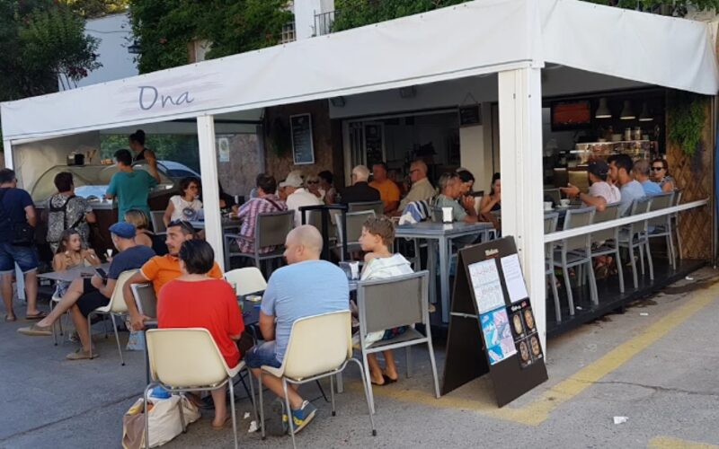
Beach Bar
Bar Ona
The liveliest spot on the beach edge — casual tables, good music and a crowd that mixes locals with visitors all evening. Great for bagels, sandwiches, burgers and tapas through the day, and cold beers and cocktails into the night.
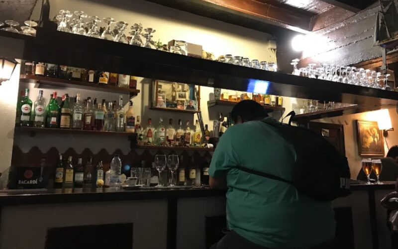
Restaurant & Bar · Local Favourite
Mossec
The village's best-kept secret. A small, intimate place beloved by locals — known for outstanding sea-and-mountain rice (arròs mar i muntanya), gloriously homemade croquettes, and an atmosphere that carries on till 3am at weekends. Don't let the modest exterior fool you.
Seafood & Views
Beach & Promenade Restaurants
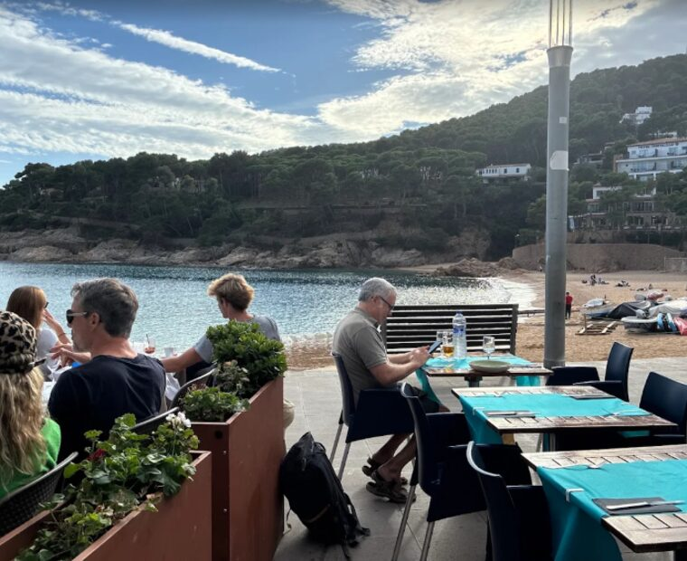
Seafood · Promenade · Tamariu's Best
El Palanquí
Without question the star of the Tamariu seafront. Sit on the terrace right at the water's edge and order the paella or — if you're lucky enough to see it on the menu — the arròs caldós de llagosta (lobster rice, broth-style). Possibly the best rice dish on the Costa Brava. Book ahead in summer.
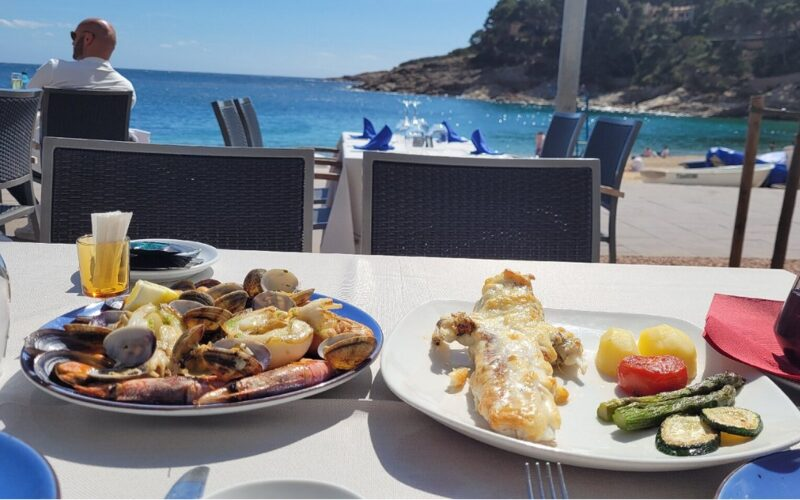
Traditional Catalan · Promenade
Royal Restaurant
A reliable beachfront institution. The meat croquettes and mussels are the thing to order, and they do a proper family-sized paella that needs a day's notice. Friendly service, fair prices, right on the passeig.

Hotel Restaurant · Beach Views
Hotel Tamariu Restaurant
The terrace of the Hotel Tamariu is one of the finest places to eat on the whole coast — right on the promenade with the whole bay laid out in front of you. The tisana cocktail is a summer ritual. Good Catalan kitchen, excellent wine list.
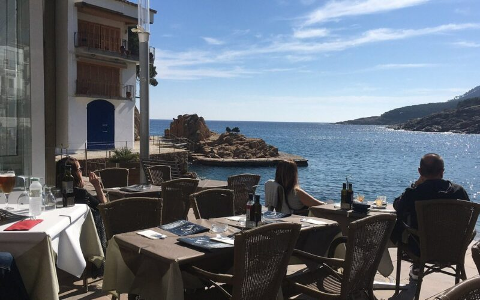
Family Run · Simple Catalan
Es Dofí
A family-run spot with sea views and honest, unpretentious Catalan cooking. Fresh fish of the day, grilled to order, with good local wine. No frills — just good food at the water's edge. A favourite for a long, lazy lunch.
Village Dining
Town & Local Restaurants
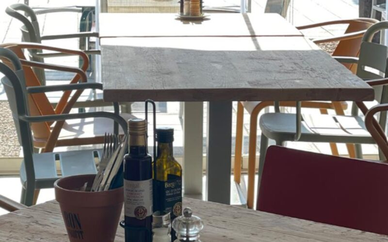
Catalan Kitchen · Good Value
El Clot dels Mussols
One of the better-value spots in the village — solidly good Catalan home cooking in a simple, honest setting. Locals eat here regularly, which is always a good sign. Great for a relaxed dinner without the beach price premium.
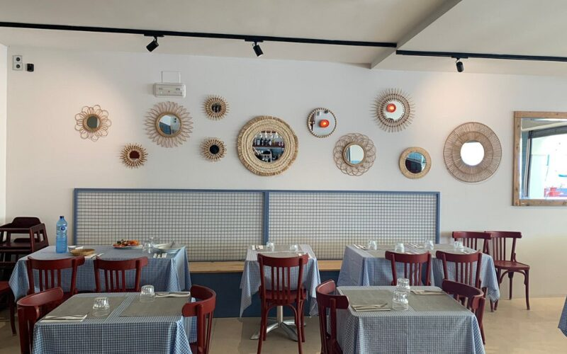
Pizza & Pasta · Family Friendly
Restaurante La Pasta Tamariu
Fresh wood-oven pizzas and pasta in a family-friendly setting — a solid choice when you want something simple and reliable. Relaxed atmosphere, good for children. The Nutella pizza for dessert has its fans.
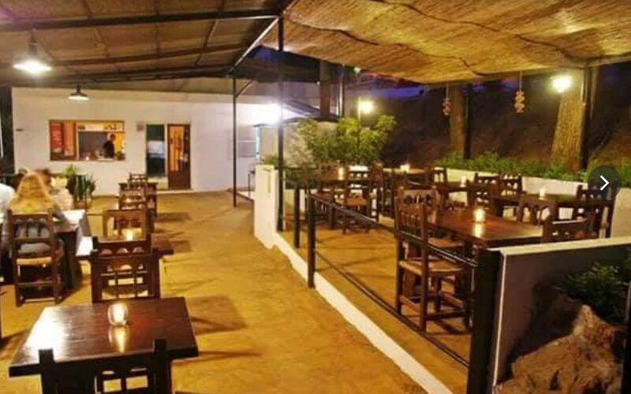
Grill & Rotisserie · Among the Pines
Restaurant La Pineda
A wonderfully relaxed open-air grill on the edge of the village, tucked down a quiet dead-end street among the pines. The speciality is meat cooked over an oak-wood fire — spit-roasted chicken, veal, rabbit and lamb chops, served with chips and simple salads. Generous, honest cooking at fair prices, with a shady terrace that's made for a long, lazy family lunch. Reserve the roast chicken a day ahead, as it slow-cooks over the fire.
A Short Drive Away
Worth the Drive
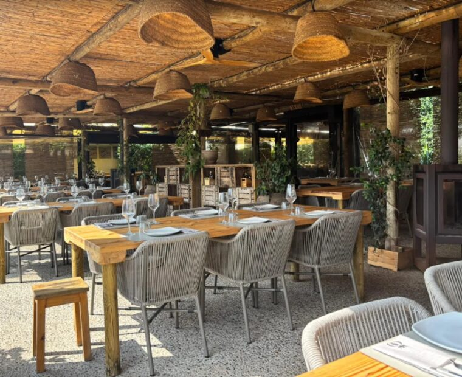
Farm Restaurant · Creative Catalan · Palau-Sator Area
Mooma
A genuinely special experience — a creative Catalan restaurant set on a working farm in the countryside near Palafrugell. They grow much of what they serve, the wine list is outstanding, and the setting among the fields is like no other restaurant on the coast. Well worth the short drive inland. Booking essential.
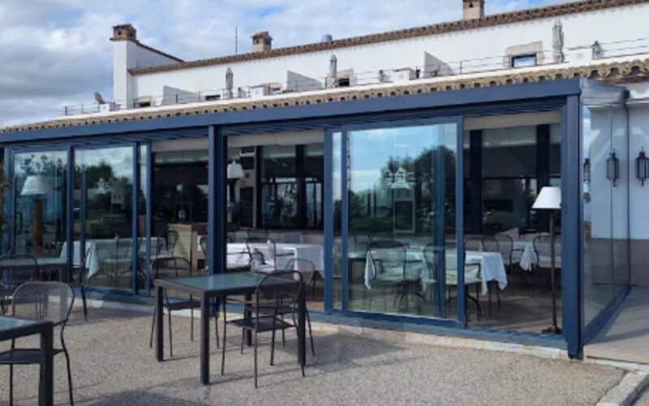
Fine Dining · Llafranc · 10 min
El Far Hotel-Restaurant
Perched on the lighthouse headland above Llafranc with extraordinary views down the coast. Creative modern Catalan cooking using the best local ingredients — a special-occasion restaurant. One of the finest settings on the Costa Brava.
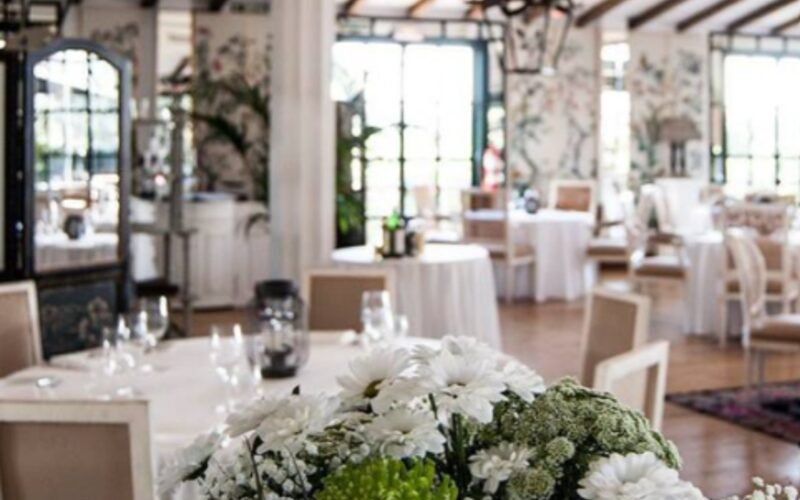
Classic Catalan · Calella · 15 min
La Malcontenta
A Calella de Palafrugell institution — simple, honest Catalan cooking in a colourful setting. The rice dishes are outstanding. Long summer lunches here are a Costa Brava highlight. Very popular — booking strongly advised.
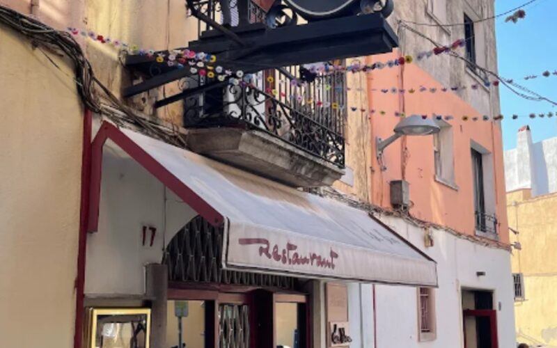
Acclaimed · Palafrugell · 15 min
La Xicra
One of the most acclaimed restaurants in the area — sophisticated Catalan cuisine in an intimate setting. The tasting menu is excellent value for the quality on offer. Book well in advance. A treat for a special evening.
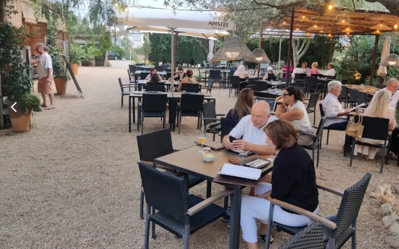
Creative Dining · Esclanyà, Begur · 20 min
Alfok
A stylish, intimate restaurant tucked away in the hamlet of Esclanyà, just outside Begur, with a lovely terrace and a short, creative menu of beautifully presented, Latin-influenced dishes. Attentive service and a real sense of occasion — one of the finest meals in the area. Open evenings, closed Tuesdays. Booking recommended.
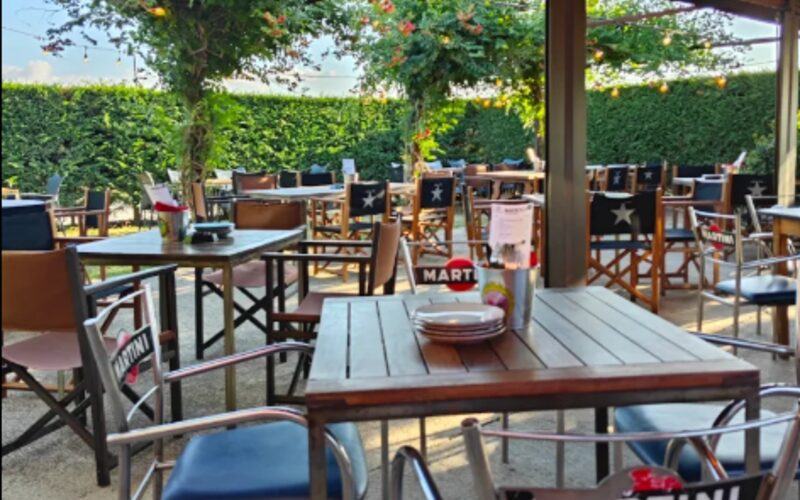
Street Food · Platja de Pals · 25 min
Machete’s
A fun, buzzy street-food spot a few minutes from Pals beach — bold flavours from Mexico and Asia with tacos, Korean fried chicken, burgers and nachos, great cocktails and a relaxed terrace. Perfect for a livelier, informal evening; equally good for families, groups and a young crowd. It fills up fast, so book ahead.
Pizza & Takeaway
Takeaway in Tamariu
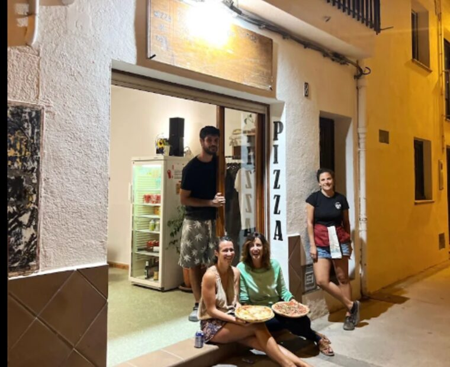
Pizza Takeaway · Artisan · Seasonal
El Camí de Ronda
Summer season onlyA brilliant little takeaway right in the village — artisan wood-fired pizzas and crepes, made fresh to order. Gluten-free bases available. Perfect for an evening on the terrace or beach. Small, so arrive early or expect a short wait — it's worth it. One of the village's genuine hidden gems.
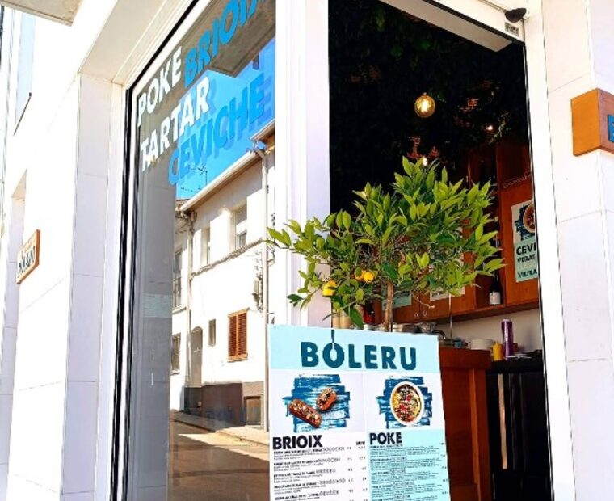
Mediterranean Takeaway · Fresh & Healthy
Boleru
A stylish little takeaway in the village with a fresh, modern Mediterranean menu — poke bowls, tartars and ceviches, plus brioches and delicate desserts, all matched with craft beer and wine. Healthy, colourful food to take back to the terrace or down to the beach. Their motto says it well: "our food, your place."